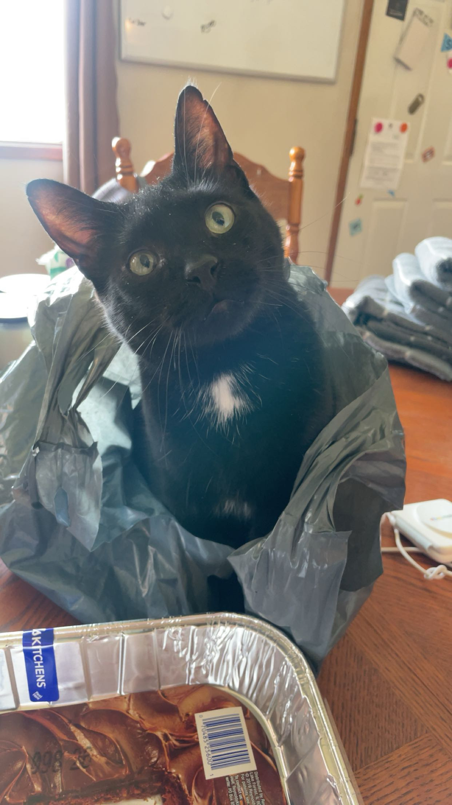
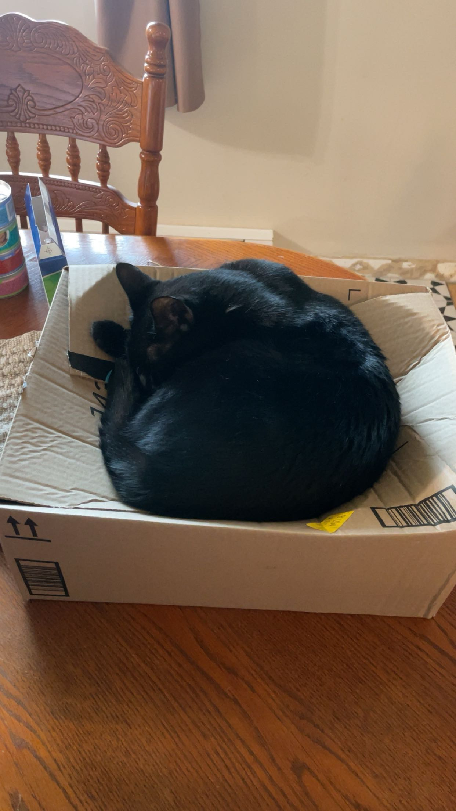

Personality
Figaro, A.K.A Fig, is a very smart energetic cat. He is always running around the house climbing on surfaces and knocking stuff down. Figaro is always in the mood to play and loves to jump and catch toys. He LOVES butter and has broken 3 butter dishes, so its always an adventure making toast in the morning.
Favorites
- Favorite Sleeping Spots: on a heated blanket, cat trees, on top of or inside boxes, snuggling in your arms
- Favorite Toy: Laser, Springs, Ping Pong balls, Crinkle Mats, Tunnels, anything he can knock off a surface, random objects.
- Favorite Person: Larry (my Dad!)